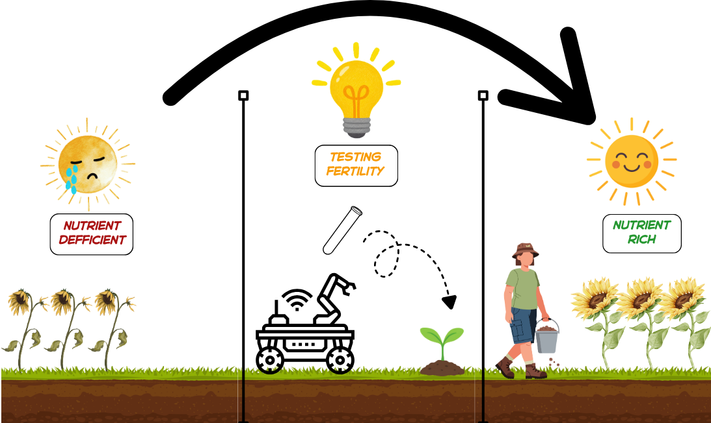

D.I.R.T.T.
Digital Instrument for Remote Terrain Testing
An autonomous, solar-powered rover that maps soil conditions across a field, so farmers know where to test next.

What is D.I.R.T.T.?
Soil can vary a lot across a single field. Testing it by hand means walking acres and taking samples, which is slow and easy to skip. D.I.R.T.T. does the legwork. It drives itself to points about 100 m apart, pushes a probe into the ground, and measures pH, conductivity, temperature and moisture at each stop. Every reading is sent back by radio with its GPS location, building a map of the field as the rover works.
D.I.R.T.T. is a screening tool, not a replacement for a soil lab. Its job is to show where conditions change, so farmers can send lab samples from the spots that matter.
How it works
- Plan: The base station sends the rover its next sampling point.
- Drive: The rover navigates there by GPS and uses LiDAR to avoid obstacles.
- Probe: A linear actuator pushes a 4-in-1 soil sensor into the ground.
- Measure: The sensor reads pH, electrical conductivity, temperature and moisture.
- Report: The reading and its location go back to the base station over long-range LoRa radio, and a copy is saved on the rover.
- Repeat: The rover moves to the next point until the field is mapped.
Key features
- Autonomous navigation: GPS waypoint driving with 360° LiDAR obstacle detection.
- Four soil measurements: pH, EC, temperature and moisture from one rugged, waterproof probe.
- Long-range radio: LoRa link to the base station, with no Wi-Fi or cell service needed.
- Mostly solar-powered: a 30 W panel charges a LiFePO4 battery for multi-day operation.
- No data lost: every reading is stored on the rover and at the base station.
- Built-in safety: physical emergency stop and a radio STOP command.
- Low cost: designed and built for under $1,000.
Project status
D.I.R.T.T. is a senior capstone project at Mississippi State University. This semester the team is building and testing the soil sensing, drivetrain and data systems. Autonomous navigation, solar charging and full field testing follow next semester.
About
Temporary Text
Team
AI Disclosure
Parts of this website's code (layout, styling, and scripts) were written with help from Claude Code. Team members directed the work and reviewed the results before publishing.
Devlog
Deliverables
Files
Shared team files: CAD, datasheets, code, test data, and anything else we're working with.